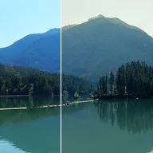

স্প্লিট টোন

শ্যাডোগুলোকে এক হিউয়ের দিকে ও হাইলাইটগুলোকে অন্য হিউয়ের দিকে টিন্ট করে; কালো, সাদা ও ব্রাইটনেস অক্ষুণ্ণ রাখে। ছায়ার স্তর উজ্জ্বলতার বক্ররেখা বাঁকায় আর হাইলাইটের স্তর হাইলাইটের রং কোথা থেকে শুরু হবে তা সরায়। গ্রেডিয়েন্ট ম্যাপ ধরনে প্রতিটি পিক্সেল শুধু তার উজ্জ্বলতা থেকে রং পায়।
সেটিংস
| সেটিং | ধরন | রেঞ্জ | ডিফল্ট |
|---|---|---|---|
| শ্যাডো হিউ | কোণ | -360° থেকে 360° | 200° |
| শ্যাডো অ্যামাউন্ট | সংখ্যা | 0 থেকে 1 | 0.6 |
| হাইলাইট হিউ | কোণ | -360° থেকে 360° | 35° |
| হাইলাইট অ্যামাউন্ট | সংখ্যা | 0 থেকে 1 | 0.6 |
| ছায়ার স্তর | সংখ্যা | -0.9 থেকে 1 | 0 |
| হাইলাইটের স্তর | সংখ্যা | -1 থেকে 0.9 | 0 |
| ধরন | পছন্দ | টিন্ট, গ্রেডিয়েন্ট ম্যাপ | টিন্ট |